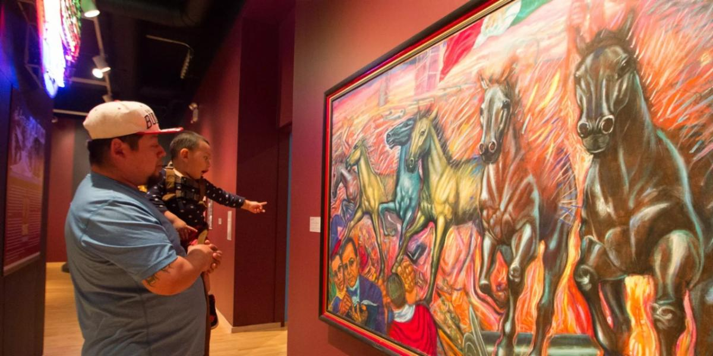
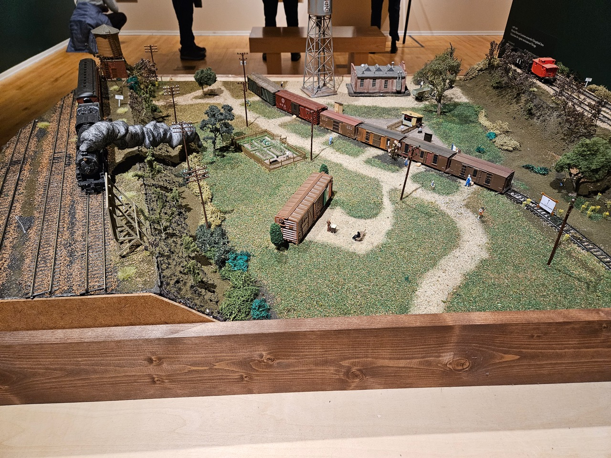
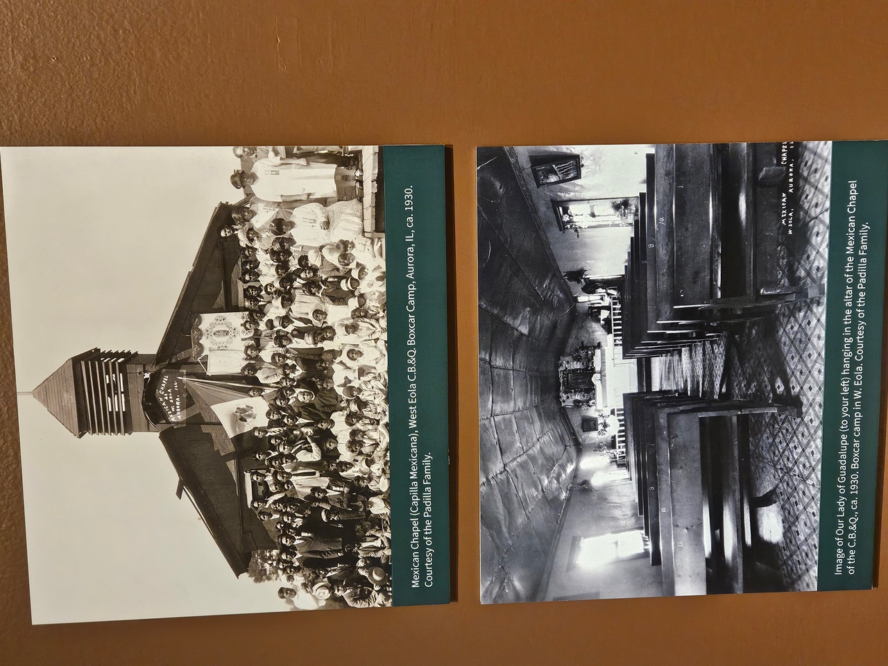

Carlos Tortolero and a cadre of Mexican American teachers founded the Mexican Fine Arts Center Museum in 1982. In 1986 the museum leased a Chicago Park District building and moved in. The building opened in 1987 and expanded in 2001. The design on the front and sides was inspired by the friezes of Mitla in Oaxaca, Mexico—a detail visible the moment you arrive.

The museum presents a number of dynamic exhibitions dedicated to Mexican art and history. The permanent exhibit “Nuestras Historias: Stories of Mexican Identity from the Permanent Collection” showcases the dynamic and diverse stories of Mexican identity in North America. Every autumn, the museum hosts a celebrated Día de los Muertos (Day of the Dead) exhibition featuring altars and related art by local and international artists.
Of particular interest right now is the current exhibition: Rieles y Raíces: Traqueros in Chicago and the Midwest, dedicated to the Mexican American workers who helped build and maintain the railroads so vital to the development of Chicago. Railroad companies around the turn of the twentieth century actively recruited Mexicans to work on the lines. Many had been laboring in the fields of Texas and the Southwest and saw the railroads as a way to improve their prospects. At first, mainly single men came—but soon their families joined them.

Once in the city, these workers—known as traqueros—improvised homes from unused boxcars and built vibrant communities in the railyards, carrying on customs and traditions from their homeland. “The unions were part of the train workers’ community,” said Cesareo Moreno, Chief Curator of the museum, as they worked to secure better pay and safer conditions. Working on the tracks was difficult and often dangerous, and many traqueros suffered injuries.
“Culture and faith—those are the two things that make a place feel like home.” —Cesareo Moreno, Chief Curator
Needing a sacred space for their rituals—baptisms, funerals, weddings—the traqueros built a chapel from boxcars, dedicated to the Virgin of Guadalupe. A family whose forebears had worked the railroads saved the icon of the Virgin and later donated it to the museum. Photographs in the exhibition depict the chapel and families enjoying musical evenings with instruments brought from Mexico.

Despite difficult work, harsh Midwestern winters, and limited access to healthcare, many Mexican Americans cherished the tight-knit communities of the railyards. “Part of our work is to research our history, our community’s history, because many people have forgotten this—and so we bring it up with the exhibits,” said Cesareo.
Many of those communities lasted until the mid-to-late twentieth century, when airplanes, trucks, and automobiles replaced trains as the primary means of moving people and goods. The members of the Mexican American railyard communities relocated to neighborhoods in Pilsen and beyond—and many of their descendants continued to work on the railroads, at Amtrak and Metra, carrying on a tradition started so long ago.
Beyond exhibitions, the museum offers arts education and performance programs and has created two festivals: Del Corazón, the Mexican Performing Arts festival, and the Sor Juana festival, dedicated to the celebrated Mexican writer and scholar. In 1997, the museum founded Yollocalli Arts Reach, a youth arts program serving Chicago teens.
1852 West 19th Street, Chicago (Pilsen)